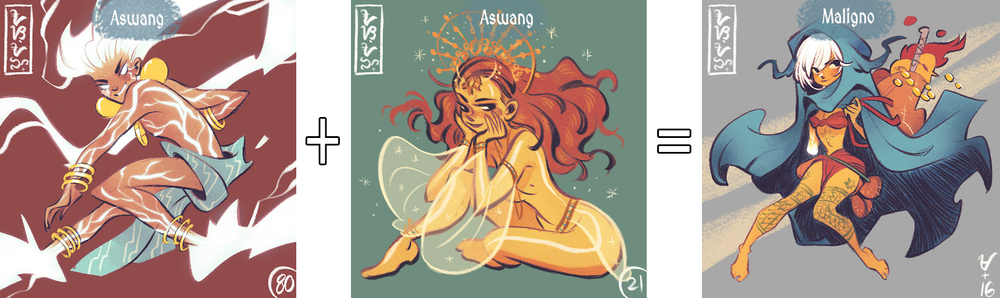
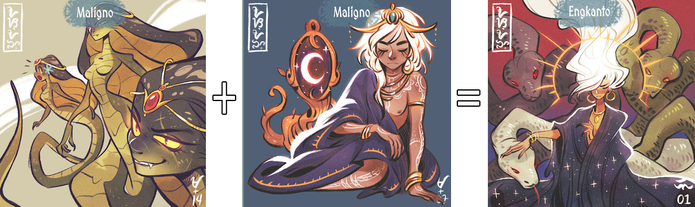

Fusion history
-
To be
continued
... -
{{item.name}}
{{item.description | slice:0:200}} ...
Sansi...? is home to seven types of creatures. These are Aswang, Yokai, Maligno, Halimaw, Engkanto and
two yet to be discovered.
From time to time two individuals find each other and a new creature is born by the hands of the mighty
OGASSI. This process is called a fusion.
The master of the creatures can send their two chosen ones into the raffle land where they might go into
the fusion process.
Yokais appear all around Sansi...? It's said that these find their way to collectors, which won one of
the Aswang Games.
🔲 1 Aswang + 1 Aswang = 1 Maligno
see an example below:
🔲 1 Maligno + 1 Maligno = 1 Engkanto
see an example below:
{{item.description | slice:0:200}} ...